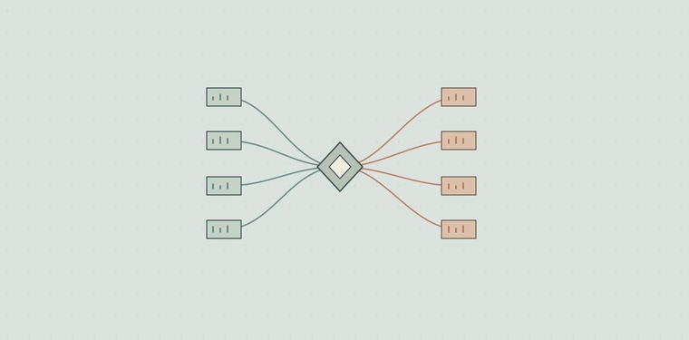

编码器给解码器留下什么
翻译 notebook 从 Multi30k 读取德英句对，分别分词、建词表、转换为编号。拼成一个批次时，pad_sequence 按该批最长序列补齐；训练函数把德语编号交给编码器，把英语编号作为目标。
Encoder 将嵌入依次送入 LSTM，最后只返回 hidden 和 cell，用来初始化英语解码器。可以在这个返回语句处停一下：解码阶段没有收到逐个德语词的编码输出，因此当前实现没有按源词计算注意力权重。
第一步究竟预测哪个词
取一个示意目标「开始／a／dog／结束」。解码器先吃入「开始」，第一次输出应与 a 比较，第二次才与 dog 比较。训练循环同时从下标 1 开始取输出和目标，跳过没有预测任务的起始位置，并在交叉熵中忽略填充编号。
训练配置的教师强制概率为 0.5。每推进一个时刻，代码选择真实目标词或者上一步得分最高的词，送回下一次解码。推理时只有自己产生的前缀，生成结束词便停止。检查偏移错误时，可以逐步列出输入词、监督词和预测词，不必等整句翻译完成。
长句与填充会影响哪一步
注意力翻译的经典做法会保留每个源位置的表示，再为目标词计算不同的加权上下文。阅读本例时，可以先对比一个短句和只加了修饰语的长句，观察后半句译词从何处开始变化。仅凭一次错译，还不能归因于定长表示。
这里还有一个独立变量：编码器直接处理补齐后的张量。把同一源句分别放进两个最长句长度不同的批次，在评估模式下比较它的最终状态。如果额外的填充步骤改变了状态，先量化这种批处理差异，再研究长句语义的影响。
源码与参考资料
相关项目自然语言处理实验